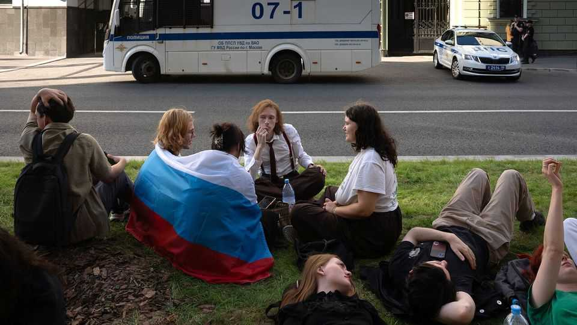

A liberal party is barred in Russia for implicitly opposing the war
Russia’s authorities are increasingly fearful of the slightest sign of dissent

Aug 13th 2026
ON August 10th several hundred mostly young people gathered in front of Russia’s Supreme Court. The pavement was covered in chalk messages: “For Yabloko, for peace”; Alexei Navalny’s slogan “Russia will be free”; and in Ukrainian, “We have no fear, we have love”. They listened on their smartphones to the court’s proceedings, as it decided whether to allow Yabloko (Apple), Russia’s oldest liberal party and the only openly anti-war one, to run in legislative elections set for September 20th. The party’s electoral manifesto consists of 43 words, the first two sentences in capital letters: FOR PEACE AND FREEDOM! FOR A LIFE WITHOUT FEAR!
Several young people sat in a row, eating apples. Someone holding a green apple and a Russian flag was hoisted above the crowd. A woman with dyed orange hair sat showily reading Kafka. After a few hours the judge, Vyacheslav Kirillov, disqualified Yabloko from the elections for the Duma, the lower house of Russia’s legislature. “Whereas previously it was forbidden to speak out against the war, now it is forbidden even to simply speak out in favour of peace,” notes Dmitry Kisiev, a political strategist in Moscow.
The case against Yabloko was a lawsuit filed by Rodina (Motherland), a Kremlin-controlled nationalist party, accusing it of “extremism”. “‘Yabloko are national traitors. They are people who embrace Western values and are demanding our surrender,” Alexei Zhuravlyov, Rodina’s chairman, said after filing the suit. It also accused Yabloko of copyright violations for using old Soviet pacifist songs and for displaying photos of the bombing of Hiroshima, allegedly infringing the copyright of the American army.
It was less surprising that Yabloko had been struck from the ballot than that it had been allowed to register on July 29th. Apparently the Kremlin’s election advisers, often known in Russia as “political technologists”, considered it safe. Since 2007 Yabloko has failed to meet the 5% threshold to make it into the Duma, not only because of election fraud but because its support is low. Until this summer, polls put it at around 3%. It was seen as independent but accommodating, willing to make concessions to the Kremlin—and therefore unappealing to opposition-minded Russians.
Its main constituency was the ageing Soviet-era intelligentsia. By the time it registered, the Kremlin had depleted its leadership, knocking its most recognisable candidates off the list. Several, including Lev Shlosberg, have been arrested; others have been declared foreign agents. The Kremlin reckoned that Yabloko posed no threat, and would allow it to paint the opposition as marginal.
But on July 27th Yabloko declared it would run as the party of peace. “We support the earliest possible agreement for a ceasefire. We support diplomacy and negotiations. We stand for the absolute value of human life, freedom from fear and repression,” the party’s leader, Nikolai Rybakov, said in a keynote speech. Opinion polls suggest two-thirds of Russians back peace negotiations with Ukraine. Yabloko’s popularity began to grow.
Its support quickly reached 5.3% in surveys by Russian Field, a pollster. By the time it was disqualified it had hit 9.3%. Social-media posts of young Russians eating apples, singing about apples or featuring an apple emoji gathered millions of views. Yabloko’s Telegram channel grew to have more followers than that of United Russia, Vladimir Putin’s party. It was endorsed by Russian politicians outside the country, including Navalny’s widow, Yulia Navalnaya.
The security services that dominate the Kremlin decided that keeping up the pretence of a real election by allowing the party to campaign was too risky. The danger, says Vladislav Inozemtsev, a political analyst, was not so much that Yabloko might re-enter the Duma, but that “they will once again be able to openly and legally speak everywhere about the need for peace.” Letting them win seats would have signalled political change; none has taken place.
The show trial highlighted public desire to halt the war. What lesson the authorities draw is a different matter. If they perceive an increasingly bold populace and a growing potential for protest, they will probably conclude that insufficient pressure, censorship and repression have been applied, argues Mr Kisiev. The Kremlin may attempt another military mobilisation after the Duma elections are over.
The threat of forced conscription is one of the regime’s most powerful tools. As soon as the court’s decision barring Yabloko from the elections had been announced, the young people in front of the courthouse began chanting “Shame! Shame!” A police officer facing them from across the road delivered a warning through a megaphone: “We’re going to round you all up now. If anyone has got something in their head, I ask you to leave—to the metro, to the discos,” he said. “If you don’t disperse, don’t take offence, but no one will come to rescue you from the military recruitment station.”■